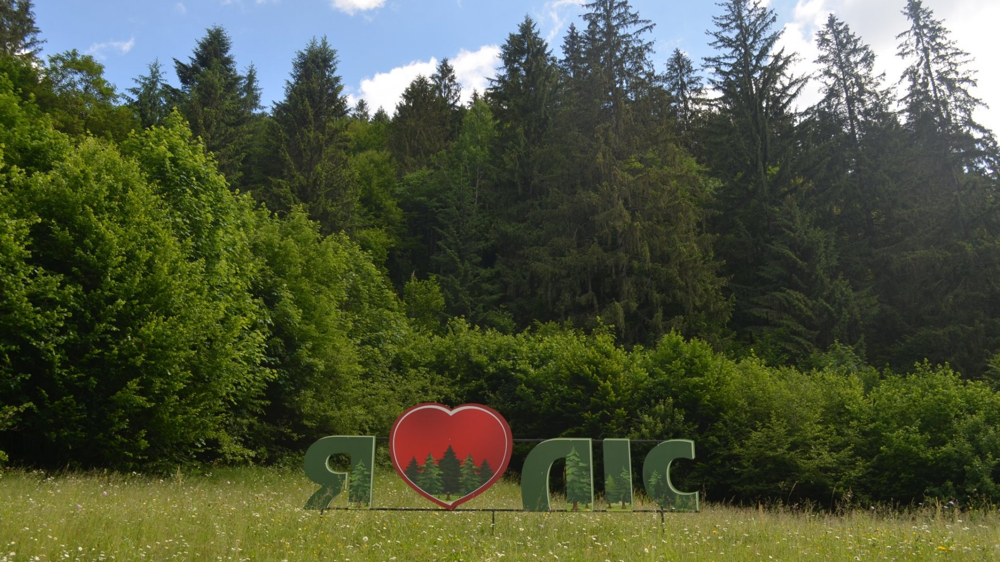

Природні скарби Рівненщини

Сезонний збір розпочато
Ласкаво просимо до нашого магазину екологічно чистих продуктів. Ми спеціалізуємося на заготівлі дикорослих грибів та ягід у серці Поліських лісів. Ніякої хімії, лише чиста природа та ручна праця.
Переглянути каталог грибівЧасті запитання
Як відбувається доставка?
Ми пакуємо замовлення у герметичні пакети та еко-коробки. Відправка здійснюється через Нову Пошту щодня о 16:00. Термін доставки 1-2 дні.
Чи є сертифікати якості?
Так, кожна партія проходить радіологічний контроль. Ми маємо всі необхідні дозволи на збір та продаж дикоросів.
Які умови зберігання?
Сушені гриби слід зберігати у скляній тарі в темному місці до 2 років. Заморожені ягоди — при температурі -18°C.